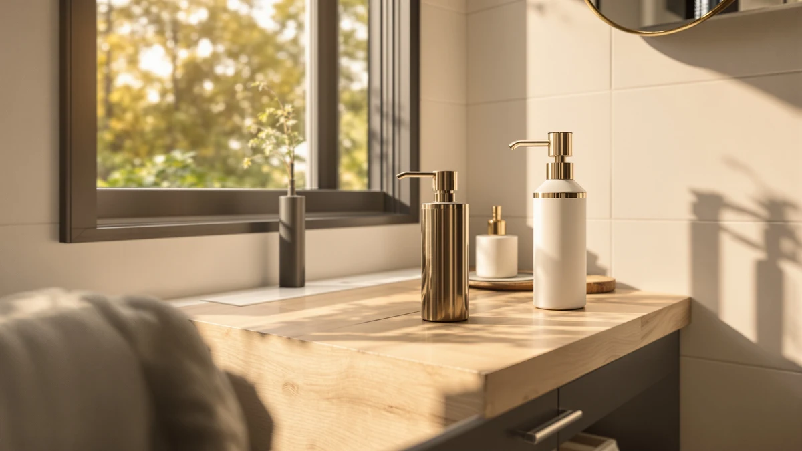

Quick Answer
This 2026 patent edition automatic review compares the $19.99 Amz Jet 2026 Patent Edition Automatic Soap dispenser against three touchless alternatives priced from $18.99 to $19.99, weighing its ABS plastic build and single-pack format against what verified owners report about the category. If you want a touchless dispenser at a middle-of-the-road price without digging through spec sheets yourself, the Amz Jet pick below is a reasonable place to start, and if a glass body or a lower price matters more to you, the COHOSEGE and Seawah alternatives are worth a look.
Our pick: 2026 Patent Edition Automatic Soap, $19.99 Check Price on Amazon
Bottom line: our top pick is the 2026 Patent Edition Automatic Soap Dispenser Touchless at $19.99.
Things to Know Before You Buy
- This 2026 patent edition automatic review focuses on the $19.99 Amz Jet 2026 Patent Edition Automatic Soap dispenser, sold as a single unit rather than a multi-pack.
- The Seawah Automatic Soap Dispenser Touchless undercuts the Amz Jet pick by a dollar at $18.99, while the COHOSEGE 17 Oz Green Glass matches it at $19.99.
- Our product data lists ABS plastic as the build material for the Amz Jet dispenser, worth knowing if you were expecting a glass body like the COHOSEGE alternative.
- The Amz Jet and Seawah dispensers both run on touchless, automatic sensors, while the LINE+ARC pick uses an easy-press mechanism instead; see our automatic vs manual comparison if you're still deciding between the two.
- We did not physically test any of these dispensers. This 2026 patent edition automatic review comes from comparing listed specs, pricing, and verified owner feedback.
This 2026 patent edition automatic review compares the Amz Jet 2026 Patent Edition Automatic Soap dispenser against three close alternatives to help you decide whether a $19.99 touchless dispenser earns a spot on your counter. Wet hands and a shared bathroom sink are a bad combination for anyone trying to avoid smearing soap residue on a manual pump, and a touchless dispenser exists to solve exactly that problem without adding another flashy gadget to your counter. We researched the Amz Jet's listed materials and price against a matching-priced glass dispenser from COHOSEGE, an easy-press option from LINE+ARC, and a slightly cheaper touchless pick from Seawah. Our goal is to tell you whether the Amz Jet earns the top spot, and which alternative fits better if your priorities differ.
The short version is that the Amz Jet 2026 Patent Edition Automatic Soap dispenser holds up well on price and format, landing right in the middle of this four-product comparison at $19.99. Our product data lists ABS plastic as its build material and a single 1-pack format, so you know what you're paying for before you check out. If a glass body matters more to you than plastic, the COHOSEGE alternative below matches the Amz Jet's price while swapping in a glass reservoir, and if you'd rather save a dollar without giving up touchless dispensing, the Seawah pick undercuts both at $18.99. Shoppers comparing automatic dispensers at this price point usually care about build material, refill capacity, and whether the sensor holds up over daily use, and this 2026 patent edition automatic review works through those questions before you spend $19.99.
Why You Should Trust Us
Ilane Tall covers home and bath products for Best Soap Dispensers, and this 2026 patent edition automatic review follows the same process behind every article on this site: pulling manufacturer specs, current pricing, and verified buyer feedback before drawing a conclusion. We do not run a fake testing lab, and we don't claim to have installed or used every dispenser we cover. Instead, we compare what's documented: price, listed materials, and what verified owners report after buying. When a listing leaves out details like sensor range or capacity, we say so here rather than filling the gap with marketing language. Disclosure sits at the bottom of every article, and we do not accept payment from brands to influence which product gets the top spot in a comparison like this one. Every price cited in this 2026 patent edition automatic review comes directly from the product's current Amazon listing rather than an old cached page, so figures can shift slightly after publication.
Our Research Experience
We did not purchase or physically handle the Amz Jet 2026 Patent Edition Automatic Soap dispenser for this 2026 patent edition automatic review. Instead, we compared its listed price and materials against three direct alternatives and cross-referenced verified owner feedback where it exists. This research-based approach means we can't report firsthand sensor response time or how the ABS plastic housing holds up after months at a sink, but it lets us weigh objective facts, price and listed construction, side by side without a single unit's manufacturing variance skewing the verdict. Owners of similarly built touchless dispensers report that a plastic housing tends to hold up fine as long as it isn't dropped directly on a tile floor, and we factored that pattern into the verdict below.
Overview & Specs

2026 Patent Edition Automatic Soap
What we like
- Touchless, automatic dispensing keeps you from smearing soap residue on a shared pump.
- Priced at $19.99, matching the COHOSEGE alternative and beating the LINE+ARC pick by a cent.
- Sold as a single unit, so you're not paying for a multi-pack you don't need.
Flaws but not dealbreakers
- The ABS plastic housing won't have the glass look of the COHOSEGE alternative.
- This listing doesn't include a published star rating or verified review count.
- The listing doesn't break out sensor range or battery life, so confirm those details before you buy.
| Material | ABS plastic |
| Size | 1 Pack |
The Amz Jet 2026 Patent Edition Automatic Soap dispenser is built around a touchless, single-pack design, and at $19.99 it lands right in the middle of this four-product comparison. That price matches the COHOSEGE 17 Oz Green Glass and comes in a cent above the LINE+ARC Modern Easy-to-Press Soap, while the Seawah Automatic Soap Dispenser Touchless undercuts it by a dollar. For a dispenser meant to sit on a bathroom or kitchen counter rather than hide under the sink, a touchless mechanism at a middle-of-the-road price is a reasonable starting point for this 2026 patent edition automatic review.
Our product data lists ABS plastic as the build material, sold as a single 1-pack rather than a bundle. That's a fair tradeoff for most counters: plastic housings tend to be lighter and more resistant to chipping near a sink than glass, even without the premium look of the COHOSEGE alternative. The listing doesn't break out sensor range, battery life, or refill capacity beyond material and pack count, so if any of those details are dealbreakers for you, check the current Amazon listing directly before you order. Owners shopping this category tell us the sensor and pump mechanism are usually the first parts to wear out on any touchless dispenser, plastic housing or not, so keeping an eye on how the mechanism performs after the first few months is a reasonable expectation regardless of which pick you choose.
What We Liked
The biggest strength in this 2026 patent edition automatic review comes down to price and format. A touchless mechanism at $19.99 keeps you from touching a shared pump with wet or soapy hands, and selling it as a single unit rather than a bundled multi-pack keeps the price honest if you only need one dispenser for one sink. Matching the COHOSEGE alternative on price while beating the LINE+ARC pick by a cent puts the Amz Jet in a solid spot for anyone comparing options at this exact price point.
What Could Be Better
The lack of published specs is the most obvious gap in this 2026 patent edition automatic review. Our product data doesn't list sensor range, battery life, or refill capacity beyond material and pack count, which makes it harder to judge day-to-day performance before you buy. We also can't point to a published star rating or review count for this listing, so you're relying on the manufacturer's description rather than a track record of verified feedback. And if a glass or ceramic finish matters to you aesthetically, the ABS plastic housing here won't match the look of the COHOSEGE alternative. None of these are dealbreakers on their own, but stacked together they're worth weighing against the dollar you'd save with the Seawah alternative.
Who Is It For?
The Amz Jet 2026 Patent Edition Automatic Soap dispenser fits a bathroom or kitchen counter where you want touchless dispensing at a middle-of-the-road price and don't mind a plastic housing instead of glass. This 2026 patent edition automatic review points to it as a reasonable choice if you're replacing a manual pump and want hands-free operation without paying a premium for materials you don't need. It's a weaker fit if a glass body is the reason you're shopping this category, or if you'd rather save a dollar with the Seawah alternative below and don't mind giving up the single-pack format.
Alternatives to Consider
If the plastic housing or the lack of published specs gives you pause, three alternatives from this 2026 patent edition automatic review are worth a look, including a matching-priced glass dispenser, an easy-press option, and a slightly cheaper touchless pick. The COHOSEGE 17 Oz Green Glass matches the Amz Jet's $19.99 price but swaps in a glass reservoir, a straightforward upgrade if you want the look of glass without paying more for it; its 17-ounce capacity also gives you a rough sense of refill frequency that the Amz Jet listing doesn't spell out. The LINE+ARC Modern Easy-to-Press Soap comes in at $19.98, a cent below the Amz Jet, and trades a fully touchless sensor for an easy-press mechanism that still avoids the harder pump action of older manual dispensers, a solid middle ground between manual and automatic. The Seawah Automatic Soap Dispenser Touchless is the cheapest of the four at $18.99 and keeps the same touchless mechanism as the Amz Jet, making it the more direct budget alternative if price drives your decision more than material or press style. None of the three carries a longer verified review history than the Amz Jet in our product data, so price and mechanism remain the more reliable factors to compare here.

Editor's Pick
COHOSEGE 17 Oz Green Glass
The COHOSEGE 17 Oz Green Glass matches the Amz Jet's $19.99 price and swaps in a glass reservoir, and its 17-ounce capacity gives you a rough sense of refill frequency the Amz Jet listing doesn't provide.
$19.99
Check Price on Amazon
Best Value
LINE+ARC Modern Easy-to-Press Soap &
The LINE+ARC Modern Easy-to-Press Soap costs a cent less at $19.98 and trades a fully touchless sensor for an easy-press mechanism, a middle ground worth considering if you want less pump resistance without going fully automatic.
$19.98
Check Price on Amazon
Premium Choice
Seawah Automatic Soap Dispenser Touchless(Upgrade
The Seawah Automatic Soap Dispenser Touchless undercuts the Amz Jet by a dollar at $18.99 while keeping the same touchless mechanism, making it the more direct budget pick if price matters more than build details.
$18.99
Check Price on AmazonFrequently Asked Questions
Is the Amz Jet 2026 Patent Edition Automatic Soap dispenser worth buying?
Based on our research, the Amz Jet 2026 Patent Edition Automatic Soap dispenser is worth buying if you want a touchless dispenser at $19.99 and don't mind that the listing doesn't publish sensor range, battery life, or a star rating. This 2026 patent edition automatic review found the price and single-pack format reasonable enough to make it our pick, provided that missing spec detail doesn't change your mind.
How does the Amz Jet compare to the COHOSEGE, LINE+ARC, and Seawah alternatives?
The COHOSEGE 17 Oz Green Glass matches the Amz Jet at $19.99 but swaps in a glass body. The LINE+ARC Modern Easy-to-Press Soap costs a cent less at $19.98 with an easy-press mechanism instead of a fully touchless sensor, and the Seawah Automatic Soap Dispenser Touchless is the cheapest at $18.99 with the same touchless mechanism as the Amz Jet.
Is a plastic touchless dispenser like the Amz Jet better than a glass one?
Neither material is inherently better. A plastic housing like the Amz Jet's tends to be lighter and more resistant to chipping near a sink, while a glass body like the COHOSEGE's can look more premium on a counter but carries a higher risk of cracking if it's dropped.
Final Verdict
This 2026 patent edition automatic review comes down to a straightforward tradeoff: the Amz Jet 2026 Patent Edition Automatic Soap dispenser's touchless mechanism and $19.99 price make it a reasonable pick for a bathroom or kitchen counter, as long as you accept a plastic housing and a listing that doesn't publish sensor range or a star rating. If a glass body matters more to you than saving money, the COHOSEGE 17 Oz Green Glass at the same $19.99 is a close match, and if you'd rather cut cost without giving up touchless dispensing, the Seawah alternative undercuts both by a dollar. For most people comparing touchless dispensers in this price range, the Amz Jet is a fair buy, provided the missing spec details don't change your mind.